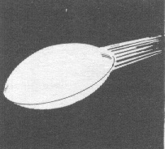
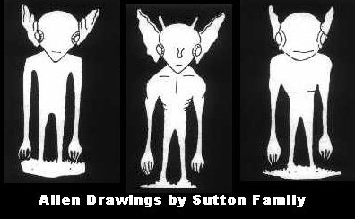
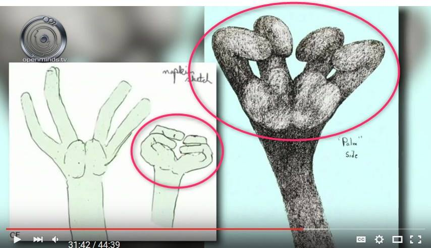

1955-08-21,Kentuckey: Solving the mystery of the "Kelly-Hopkinsville" alien encounter
 
Preface
- The mystery of this case should be easily solved as described below.Past Articles
Kentucky in 1955: details of the Kelly-Hopkinsville alien encounter (2012-01-07)▼Click to Expansion
- In yesterday's article below, the details of the incident itself were omitted. Since this is an opportunity, I will present the details of this incident. Kentucky in 1955: details of the Kelly-Hopkinsville alien encounter (2012-01-06)Summary
- Date: Night of August 21, 1955 - Location: Kelly, a town near Hopkinsville, Christian County, Kentucky The Sutton family was at the Sutton house with their friend Billy Ray Taylor. There were seven adults in the house that day. The patriarch, "Lucky" Sutton, was the chief of a nearby clan. Billy Ray Taylor went to the well outside the house to get water, as the Sutton family did not have running water. Billy saw a huge shiny object land in the canyon 400 meters away. He ran home and reported it, but no one believed him and laughed at him for being ridiculous. A short time later, their dog began to make a fuss outside the house, and Billy and Lucky went outside with guns in their hands. As is customary in this area, they intended to shoot first and ask questions later. They stopped just a few feet from the front door. A three- to four-foot-tall creature approached them with its hands raised in surrender. The creature was very strange, with large eyes, a large thin mouth, large ears, short legs, and clawed hands. Scared by the little green creature, Billy fired his .22-caliber gun (bullet diameter 5.6 mm), and Lucky fired his shotgun. The two later stated that it was impossible to miss at such close range, but that the creature somersaulted backward and ran off into the woods. As soon as they returned inside the house, the creature appeared at the window. They shot at it. A hole was torn in the window screen. They ran outside the house to see if the creature was dead, but found nothing. Then, as they were standing in front of the front door of the house, they were horrified when a clawed arm came down from the roof and tried to grab them. They fired again, but the creature flew through the air and onto the ground, where it hid in the woods. The two men took up defensive positions inside the house, but the house was surrounded by several small creatures. For a while, the creatures appeared in one window and then another, as if to tease the family. They fired shots through the windows and walls, but it seemed to have no effect on those creatures. After several hours of terror, the Sutton family decided to escape their home and seek police assistance in Hopkinsville. They drove two cars to the police station and told Sheriff Russell Greenwell what had happened. The family convinced the police that they were not joking and that they were serious, and they agreed to go to the house. The police arrived at the house and found numerous bullet holes in the windows and walls, but no trace of the creature. Greenwell was in command of more than a dozen officers on the scene, and he told them that Sutton was a straight shooter and seriously scared about something. Reported. A neighbor who lived behind reported hearing shots and seeing light(s) in the sky. A thorough investigation into the cause of the incident was conducted and the police left at 2:15AM. Shortly after the police left, the creature(s) returned. They began peering curiously through the window. More shots were fired but to no avail. Thus followed a few more bizarre hours, which ended just before dawn. The police were finally asked to call in Air Force officials after a new investigation the next day turned up nothing. Billy and Lucky went to Evansville and other places in Indiana on business. The remaining five adults were searched by the Air Force and police. The incident was reported in the Kentucky New Era newspaper on August 22, 1955. The public assumed that the story was a hoax. But if so, the following questions need to be answered. Why did the Sutton family need to tell a lie that would not bring in a penny of money or publicity? Why did they have to drill gun holes in every wall of the house (when it would have cost a fortune to repair the house)? The seven adult witnesses to the incident, including Billy and Lucky, were examined individually and gave unanimous answers about the incident. And the sketches they made of the creatures they witnessed were similar. The case was also investigated by Dr. Allen Hynek, and many UFO researchers believe the case is genuine.source
http://ufocasebook.com/Kelly-Hopkinsville.html (2012-01-07)
Past Articles
Richard Dolan : the Kelly-Hopkinsville alien encounter (2020-02-28)▼Click to Expansion
Preface
The details of this incident were covered in a previous article below. Kentucky in 1955: details of the Kelly-Hopkinsville alien encounter (2012-01-07) Richard Dolan discusses the case.Excerpt
9:00 a.m. The small green creature that emerged was shot at close range with a shotgun and rifle, bt escaped unharmed. Normally, this would not be possible. This is very similar to the case of the large wolf-like creature that appeared at Skinwalker Ranch. The fact that this creature approached us with its hands raised is concerning. It is as if it is gesturing that it has no hostile intentions. In fact, this creature has not harmed humans. The unknown creature did not appear to be bending its leg joints. Yet it did a back somersault. It was also floating (not jumping).Video (34:38)
23,789 views,Streamed live on Feb 23, 2020 ・The Hopkinsville Creatures: What On Earth Were They? Richard Dolan Livestream. (2020-02-28)
Unraveling the mystery of this case
- The incident began as follows.Billy then saw a huge shiny object land in the canyon 400 meters away.- In addition, a resident of a neighboring house also witnessed the next light in the sky.A neighbor who lives behind reported that he/she heard gunshots and saw light(s) in the sky.- From this, it can be concluded that they witnessed a luminous phenomenon caused by an EMF anomaly(*1). - Afterwards, "a short time later, the owner's dog began to make a fuss outside the house," which indicates that an EMF anomaly also occurred around this house, and the dog, driven by anxiety, made a fuss. - Everyone in the house, to varying degrees, deviated from their normal state of consciousness due to EMF abnormalities. One person saw a hallucination of a monster (later interpreted as ET) and made a fuss, and the people around him also panicked because of their heightened suggestibility due to the disturbance in consciousness, and each of them also saw the monster in their own eyes. - In fact, there is no evidence that this ET ever existed. Not even a single footprint has been found. Despite being shot at close range, they were uninjured and showed no signs of injury. Furthermore, there is testimony that this ET performed several maneuvers (levitation) that would be impossible for a real creature to perform. - Therefore, considering the "objectivity trap," which will be discussed shortly, the mystery of this case can be solved by the mechanism of "EMF abnormality → temporary loss of consciousness → hallucination.Objectivity Trap in UFO/ET Phenomena
- In the "EMF anomaly -> temporary disorientation -> hallucination" theory, the following passages could be problematic.The seven adult witnesses to the incident, including Billy and Lucky, were examined individually and gave unanimous answers about the incident. And their sketches of the creatures they witnessed were similar.- In other words, the following two points, a and b, have been regarded as the basis for the ET, in this case, real rather than hallucinatory. In other UFO cases with many witnesses(*2) have also been regarded as important grounds for objective factuality. (a) All parties to the case gave unanimous answers about the case. (b) The parties to the case were similar to each other in their "sketches of the creature they had seen. - They would have ruminating each other immediately after the incident, so their stories are consistent. It is quite predictable that they would have told each other immediately after the incident what the monster looked like. - Perhaps the most important point here is the following. - The details of the monster's appearance and its behavior "emerge from the exchange of stories among experiencers immediately after the incident" (Hypothesis: *3). - When we are encountering ETs/monsters right now, we are in the middle of hallucinating due to disorientation, so the images are only vague and nebulous(*4), like hallucinations on falling asleep. - The vague and nebulous image will not become concrete and tangible until later. The details of the monster and its behavior are "created after the incident" through the "exchange of stories among experiencers immediately after the incident(*5). - This is how the false objectivity of "a" and "b" arose.(*1)
ref: Simplified illustration of what UFOs are. (Version: 2022-04-09) - http://news21c.blog.fc2.com/blog-entry-19331.html(*2)
- The following are examples of UFO cases with numerous witnesses. 1966-04-06,Australia: Westall UFO Case Witness Testimony (Entire) (2022-02-28) Testimony of a person who witnessed ET at close range at an elementary school in Zimbabwe in 1994. (2018-06-28) Linda Zimmermann: Three school teachers witnessed a UFO floating overhead at low altitude for 20 minutes. The same night, the UFO was photographed and published in a local newspaper. (2021-08-31)(*3)
- This hypothesis corresponds to the rational interpretation of "resonant cognition" described in previous articles. There is also an "ESP-interpreted" version of "resonant cognition. - In the case of the "1955 Kentucky: Kelly-Hopkinsville Alien Encounter" discussed in this article, this rational interpretation version seems to be almost sufficient. - However, I feel that it is difficult to explain the sketch (below) drawn by the parties involved in the Allagash abduction case using the above rational interpretation version. This is where the ESP version of "resonant cognition" comes in. Allagash abduction Later in the case: one of the four victims denies (+addition) (2022-01-27)(*4)
- Vague and vague images, like hallucinations upon falling asleep... - Therefore, there have been many reports of people strangely forgetting about their UFO/ET sightings immediately after they have seen them, and then remembering them at a later time (as discussed in the previous article below). This is similar to sleep-wake hallucinations, in that the ET/UFO is not deliberately manipulating the memory of the witness.- Numerous cases have been reported in which, immediately after a UFO sighting, the sighting itself was completely forgotten and later suddenly recalled... - I witnessed a UFO, but immediately afterward I completely forgot the experience, and finally remembered it through notes I had written down immediately after the sighting. I have discussed a number of such strange cases in past articles. For example, the following case corresponds to them. October 1994, Virginia: Close range sighting of a partially transparent, 300-meter-long triangular UFO (en route: Part 2) (2014-05-21) Linda Zimmermann testifies about her UFO sighting and mysterious memory lapses (2020-06-28) Richard Dolan : UFOs: The Unexplained Phenomenon of Oblivion Immediately After Sightings (2019-01-20) August 2, 1998 : Incident of being pulled inside a UFO from inside a house right after videotaping the UFO (en route: Part 1) (2015-06-26) ref: Tim Seanor :A whole family witnessed and photographed quadrilateral, disk, and cigar-shaped UFOs (en route: Part 1) (2022-03-19)(*5)
- Produced ex post facto... - The principle is the same when there is only one witness or experiencer. After the experience, the work of reflecting and ruminating on the incident alone is always involved. The details of the UFO/ET/abduction incident are "created after the fact" by the ruminating process. - In addition, regressive hypnosis, a "joint ruminating process" involving altered consciousness, is prevalent in the UFO community. In other words, regressive hypnosis is also a powerful factor in the "post-production" of UFO/ET/abduciton experiences. (2022-04-08)Thanks
Translated with www.DeepL.com/Translator (free version) (2022-04-10 : traslation)
First published
1955-08-21,Kentuckey: Solving the mystery of the "Kelly-Hopkinsville" alien encounter (2022-04-10)
Original article in japanese
1955年ケンタッキー：「Kelly-Hopkinsville の異星人遭遇事件」の謎を解く (2022-04-08)